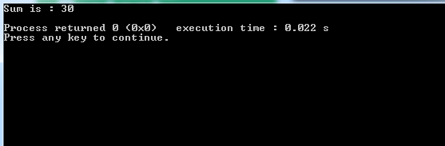
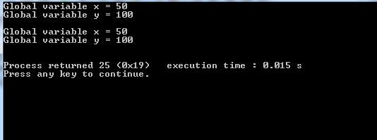

A variable is an entity that can change during the execution of a program. Variable names are names given to location in memory. These locations can contain integer, float or character constant. Constants are fixed values in the program that may not change during the execution
In any language the type of variable that can hold depends upon the types of constant that it can handle. For example, an integer can hold only integer constant, a Float can hold only a floating constant and a character can hold only a character constant.
A programmer can always create a meaningful variable names For example, if you want to calculate simple interest, it is always advisable to create a names like prin, roi, noy to represent Principle, Rate of interest and Number of Years rather than using a, b and c.
Example: Code98_cd
Wrong: 98code
Correct: _98code
Wrong: code,98
Wrong: code 98
Example: si_nmt
These rules are same for all types of variables.
Declaration of a variable can be done at beginning of a program before the use of that variable. Declaration of a variable tells the compiler what the variable names is and what types of data the variable will hold.
Note: If you want to declare a variable outside the main() method use ' extern’ keyword.
For Example:
In the above example three variables are declared, an integer variable ‘ a’, a character variable ‘ b’ and a string variable ‘ last’ which can be up to 30 characters.
Defining a variable means the compiler will allocate a memory space for that variable. If you are using the variables inside the main() method of the program, it is not necessary to declare a variable using ‘ extern’ keyword.
Example:
Initialization of a variable means assigning a value to a variable. Below example shows defining and initialization in single statement.
Example: int x = 20;
Program for declaring, defining and initialization
Output:

Following are the types of variables in C language.
Variables Declared inside the function or block of code is called as Local Variables. These Variables are accessible from the function or block in which they are declared. Local Variables has higher priority than global variables.
Example:
In the above example ‘ x’ is a local variable which is only accessible inside that function in which they are defined. If you try to use this variable ‘ x’ outside the function, you will get an error. Here variable ‘ x’ is exists until the ' function1()' is executing. If the ' function1()' ends the variable ‘ x’ is destroyed.
Example Program for Local variables
Output:
In the above example program variable ‘ x’ is declared inside the loop or block i.e inside braces are completely difference from variable ‘ x’ declared outside the loop or block. Inner variable ‘ x’ is accessible only inside the loop. Once the execution of the loop or block is completed the inner variable ‘ x’ is desctroyed.
Variables declared outside the function or block of code is called Global variables. Any function or block can access or modify global variables. These variables must be declared before main() function.
Example:
In the above example global variables ‘ x’ and ‘ y’ are defined outside the function with the type ‘ int’. These variables are accessed in the main() function. Unlike local variables, global variables are not destroyed as soon as the function ends. They are accessible to any function until the program is executing.
Example program for global variables:
Output:
In the above program variables ‘ x’ and ‘ y’ are global variables declared and initialized outside the main() function. These variables are accessible from inner block and from outer block. Unlike Local variables, global variables are not destroyed. They are available to any function until the program is executing.
Static variable is a variable that retains its value in different function calls. The static variable is declared with the keyword ‘static’. Static variable are initialized only once, if the the variable is not initialized the default value will be ‘ 0’.
Example:
In the above program, if you call the function ‘ increment1()’ many times, local variable will print the same value for each function call i.e; 11,11,11,11,11, and so on. The static variable will print the incremented value in each function call i.e; 11,12,13,14,15 and so on.
Example program for static variable:
Output:
In the above function variable ‘ x’ is a local variable and ‘ y’ is a static variable. If you call the function ‘ increment1()’ multiple times, local variable will print the same value for each function call i.e 11,11,11,11 and son on. The static variable will print the incremented value in each function call i.e; 31,32,33,34 and so on.